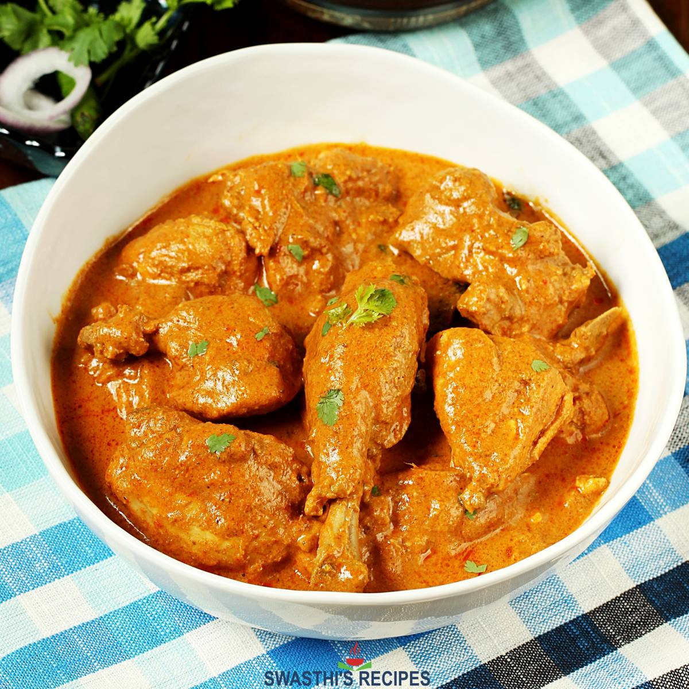

Chicken Qorma

Qorma is a dish consisting of meat or vegetables braised with yogurt and spices to
produce a thick sauce or gravy. It has its roots in the Mughlai cuisine
of the Indian subcontinent. The flavour of a qorma is based on the mixture of spices,
including ground coriander and cumin, combined with yogurt kept below curdling
temperature and incorporated slowly and carefully with the meat juices. Traditionally,
this was carried out in a pot set over a very low fire, with charcoal on the lid
to provide all-round heat.
The term shahi (English: royal), used for qormas, indicates its status
as a prestige dish, rather than an everyday meal, and its association with the court.
This recipe produces a perfect old delhi style qorma with its authentic tangy taste
which can be eaten along with pulao, rotis or parathas.
You'll find a detailed ingredient list and step-by-step instructions in the
recipe card below.
Recipe Card
Ingredients:
For Paste
- Oil for frying
- 4 medium Onions, sliced
- 8-9 Cashew Nuts
For Curd Mixture
- 2 cups Curd, beaten
- 1 ½ tsp Ginger Garlic paste
- 1 ½ tbsp Coriander powder
- 1 ½ tsp Degi red chili powder
- ½ tsp Turmeric powder
For Delhi Style Chicken Qorma
- 3-4 tbsp Fried Onion Oil
- 3-4 Cloves
- 3-4 Green Cardamom
- Prepared Curd Mixture
- Salt to taste ~ 1 tspn
- 1 kg Chicken (thigh & drumstick)
- 1 heaped tbsp Prepared Onion-Cashew Paste
- 1 tsp Kewra Water
- 1 tbsp chopped Coriander leaves
For Garnish
- Coriander sprig
Steps:
For Paste
- In a kadai, add oil, once it's hot, add onions and fry until it's light golden in color.
- Transfer it to a absorben paper and keep aside for further use.
- In the same oil, add cashewnut and fry until light golden in color.
- Transfer the mixture into the grinder jar and make a smooth paste of it.
- Keep aside for further use.
For Curd Mixture
- In a large bowl, add curd, ginger garlic paste, coriander powder, degi red chili powder, turmeric powder and mix it well.
- Keep aside for further use.
For Delhi Style Chicken Qorma
- In a handi, add fried onion oil, once it's hot, add cloves, green cardamom and let it splutter.
- Add prepared curd mixture and saute it for 4-5 minutes on low flame.
- Add chicken and cook it for a while until tender. Add kewra water and mix it well.
- Finish it with coriander leaves and transfer it to a serving dish.
- Garnish it with coriander sprig and serve hot with roti.